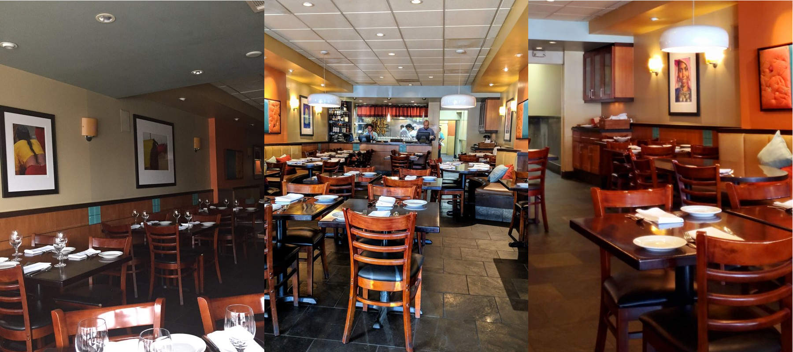

| Home | About | Lunch Menu | Dinner Menu | Take Away Menu | Bookings | Gallery |
Choose a Curry from the lunchtime special menu below. Dish accompanied by plain rice and plain naan
| Entrée | ||
|---|---|---|
| Vegetable Samosa | Deep fried pastry stuffed with lightly spiced potatoes and green peas | |
| Chicken Tikka | Boneless marinated chicken grilled in tandoor | |
| Seekh Kebab | Spiced and skewed lamb mince cooked in tandoor | |
| Chicken | ||
| Butter Chicken (mild) | Bone less chicken grilled in tandoor and finished with creamy tomato gravy | |
| Chicken Balti (medium) | Boneless chicken cooked in medium spiced sauce with onion, capsicum and tomat | |
| Chicken Madras (mild to medium) | Creamy coconut based delicacy cooked to perfection | |
| Lamb | ||
| Lamb Rogan Josh (medium) | Lamb cooked in traditional north Indian style | |
| Lamb Korma (mild) | Blend of creamy cashew nut gravy cooked with lamb | |
| Lamb Madras (medium) | Creamy coconut based delicacy cooked to perfection | |
| Lamb Masala (medium) | Lamb cooked in onion, tomato masala gravy | |
| Lamb Vindaloo (HOT) | Spicy lamb curry prepared in Goan style | |
| Beef | ||
| Beef Madras (mild to medium) | Combination of creamy coconut sauce cooked to perfection | |
| Vegetarian | ||
| Paneer Tikka Masala (medium) | Cottage cheese with onion, tomato, capsicum and spiced gravy | |
| Mix vegetable (medium) | Fresh vegetable cooked in medium spiced gravy | |
| Vegetable Madras (mild to medium) | Creamy coconut based delicacy cooked to perfection | |
| Chole Masala/Chole Palak (medium) | Chickpeas cooked in onion tomato gravy or spinach sauce | |
| Aloo Gobi / Aloo Mutter (medium) | Potatoes cooked with cauliflower or green peas in spiced sauce | |
| Dal Tadka (mild to medium) | Yellow split lentil tempered with garlic, tomato and onion | |
| Dal Makhani (medium) | Black lentil & kidney beans cooked with tomato, cream and butter | |
Phone: (03) 9568 1486
Licenced and BYO Wine only
All curries Gluten Free & Halal
Conferences and group bookings accepted
All prices include GST. Prices are subject to change without notice